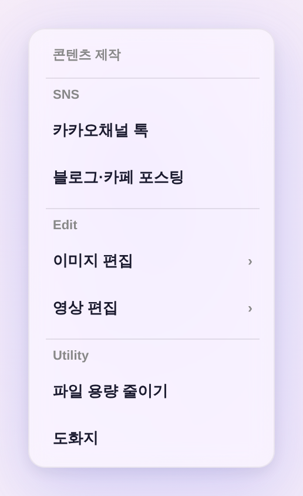
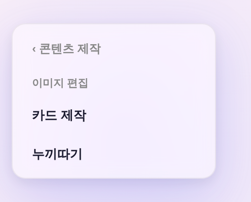
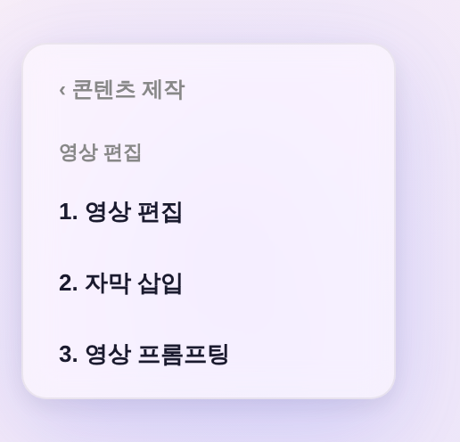

2차(운영자 「메뉴 순서 배치 · 관련 없는 건 숨겨줘」) → 3차 정정(운영자 「이미지 편집이 더 대메뉴인데, 이걸 카드제작에 붙이냐 누끼따기에 붙이냐가 왜 나와?」) — 상위 분류는 도구 하나에 붙이는 게 아니라 그 아래 도구들을 담는다.
2차에서 「이미지 편집」을 도구 1개(카드 제작)의 새 이름으로 취급 → 「카드 제작이냐 누끼따기냐」라는 있으나 마나 한 질문이 나왔다. 실제 구조는 분류 1 : 도구 N.

› = 하위 보유 표시문법 = 대메뉴 간 이동에 이미 쓰던 축 100% 재사용(_ddMorph의 .dd-panel ±200px 좌우 슬라이드 + .dd-menu left/width/height 모핑) — 신규 CSS·색·부품 0. 머리줄 ‹ 콘텐츠 제작 = 같은 함수 dir -1로 복귀.


_CT_IMG·_CT_VID)을 분류명 라벨 + 도구로 인라인 나열. 목록은 한 벌(SSOT)이라 두 벌 관리 없음.| 구획 | 항목 | 하위 도구 | 여는 것 |
|---|---|---|---|
| SNS | 카카오채널 톡 | — | openKakaoDesigner() |
| 블로그·카페 포스팅 | — | openNaverBlogTool() | |
| Edit | 이미지 편집 › | 카드 제작 · 누끼따기 | openCardMaker() · /cutout/ 새 탭 |
| 영상 편집 › | 1 영상 편집 · 2 자막 삽입 · 3 영상 프롬프팅 | openVideoEditor('edit'|'sub'|'prompt') | |
| Utility | 파일 용량 줄이기 | — | openFileSlimmer() |
| 도화지 | — | openBookingProcess() | |
| 숨김 | 로고 제작 · 한글문서 편집 · 오피스문서 편집 · 문서 → 마크다운 · 링크 자료수집 · 에니어그램 | 주석 보존 = 롤백 1줄 · 함수·CSS·딥링크 생존 | |
3차에서 누끼따기는 숨김 해제 — 이미지 도구라 「이미지 편집」 분류에 제자리를 찾았다. 자막 삽입·영상 프롬프팅도 접기 해제(분류 안에서 3개 그대로).
tools/scratch/shot_contentmenu_ba.mjs)| 확인 | 결과 |
|---|---|
| 상위 6항목·순서 + 이미지·영상 편집에 하위 보유 표시(›) | PASS |
| 드릴인: 이미지 편집 → ‹돌아가기 + 카드 제작 · 누끼따기 / 영상 편집 → 3분류 전건 | PASS |
| 되돌아가기 = 상위 6항목 복귀 · 퇴장 패널 정리(누적 0) | PASS |
| 모바일 아코디언 = 인라인 나열(도구 5종 전건 노출 · 드릴인 버튼 0 = 열 수 없는 버튼 없음) | PASS |
숨김 대상 잔존 0(상위·하위·아코디언·더보기 시트) · pageerror 0 · check_design 통과(raw hex 무변) | PASS |